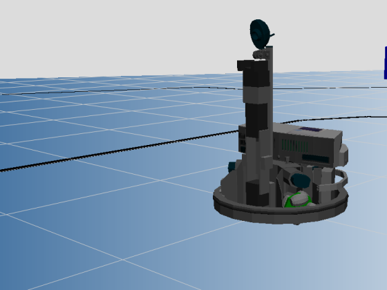
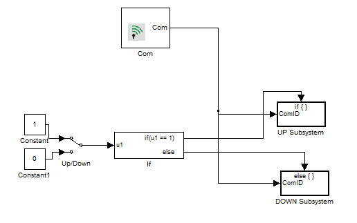
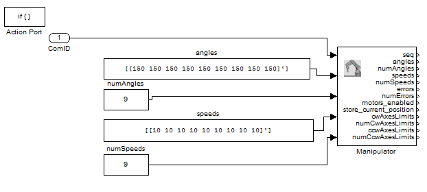
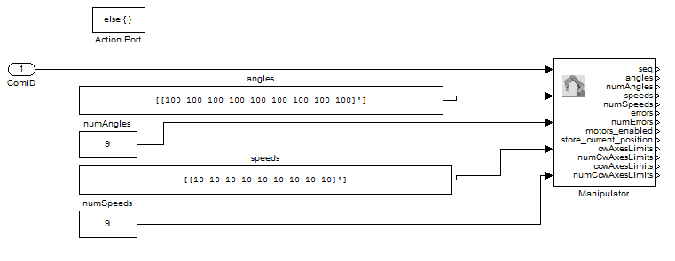

Manipulator Example
In this example Robotino's manipulator is raised up and down by toggling a switch.
Contents

Blocks used in this example
Description
Robotino can be equipped with a manipulator (arm) and this example explains how the manipulator can be controlled.

Case UP
If the switch is toggled to UP then the following if block is executed and each of the angles is set to 150 degrees.

Case DOWN
If the switch is toggled to DOWN then the following else block is executed and each of the angles is set to 100 degrees.
